Prison
Break
Unlock. Escape. Discover.
A VR escape room built around a real person: the only way out is getting a guarded key maker to open up.
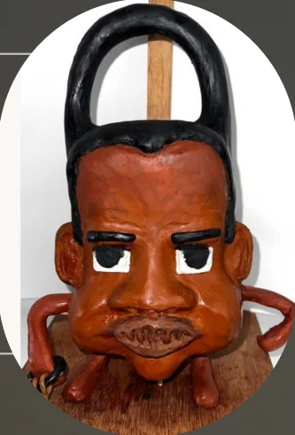
He didn't want to talk.
For the Character Design module we had to turn a real person into a clay character, after meeting them and learning their traits. I chose a key maker, Guddu bhai. At first he was mysterious, rude and wouldn't talk. As I kept talking to him, he slowly opened up.
-
At first
Guarded
Mysterious, rude and quiet. He kept to himself and wouldn't answer.
-
Then
Opening up
As I kept the conversation going, short answers slowly turned into real talk.
-
In the end
Open
Warm and kind. He shared his life with me, and showed he can make a key of any kind.
Guddu bhai, the amazing key maker
Born in 1978 in a large family in Uttar Pradesh. He carries a quiet strength and a sense of mystery. His eyes hold stories untold, and his reserved demeanor hints at depth. He balances a quiet, introspective life with daily work and family responsibilities.
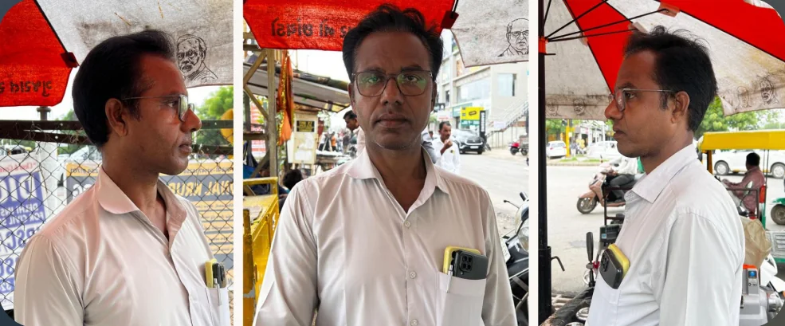
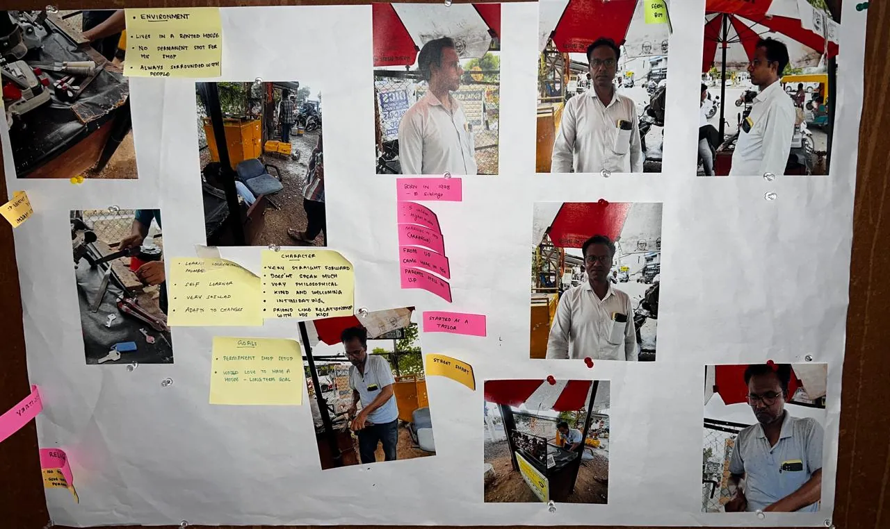
A man shaped like a lock.
Guddu bhai is a personification of the object he knows best, the lock, because he is reserved by nature. I drew him first, then sculpted him in clay.
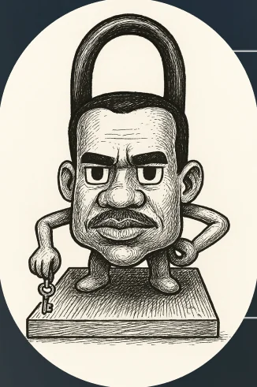
- KEYWORDS
- Mysterious
- Philosophical
- Skilled
- Intimidating
- Humble
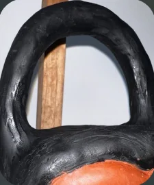
A padlock for a head. He's a personification of the lock because he is reserved by nature.
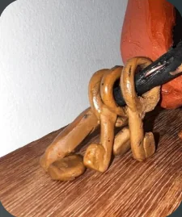
Keys without teeth. Answers can only be unlocked by him, revealing information only when he chooses to share it.
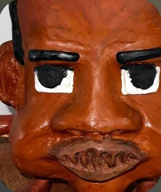
Intimidating eyes, an exaggerated nose and bold eyebrows reflect his strong, imposing personality.
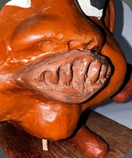
Keyhole-shaped lips, for his reserved nature and the idea that he "holds the keys" to his thoughts and emotions.
Making him
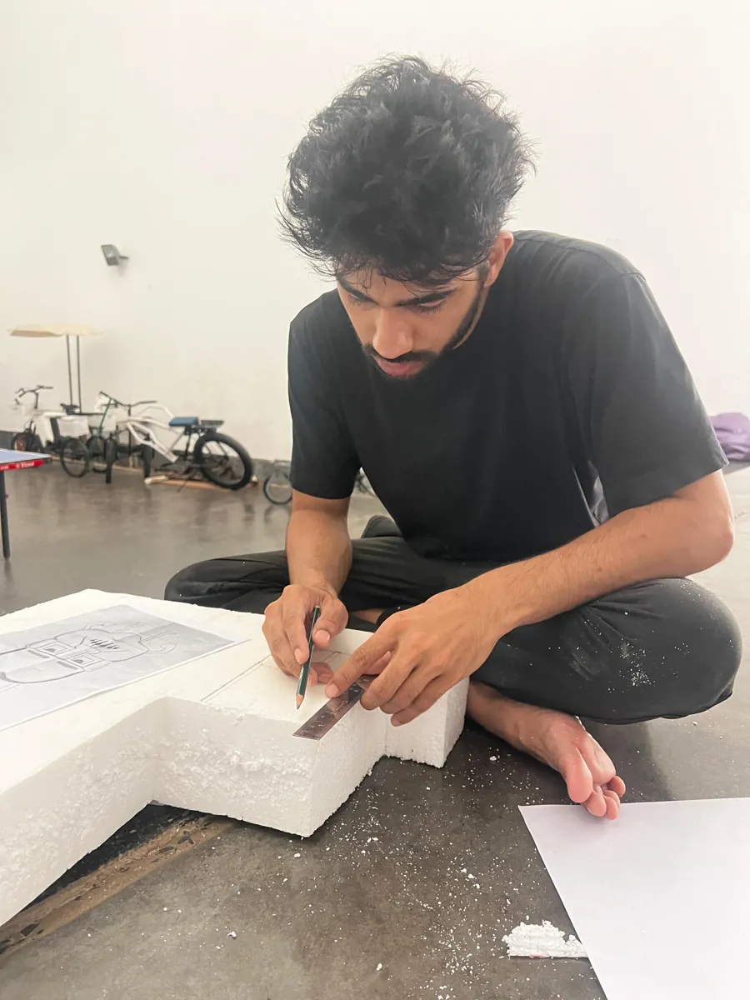
01Carving the foam core
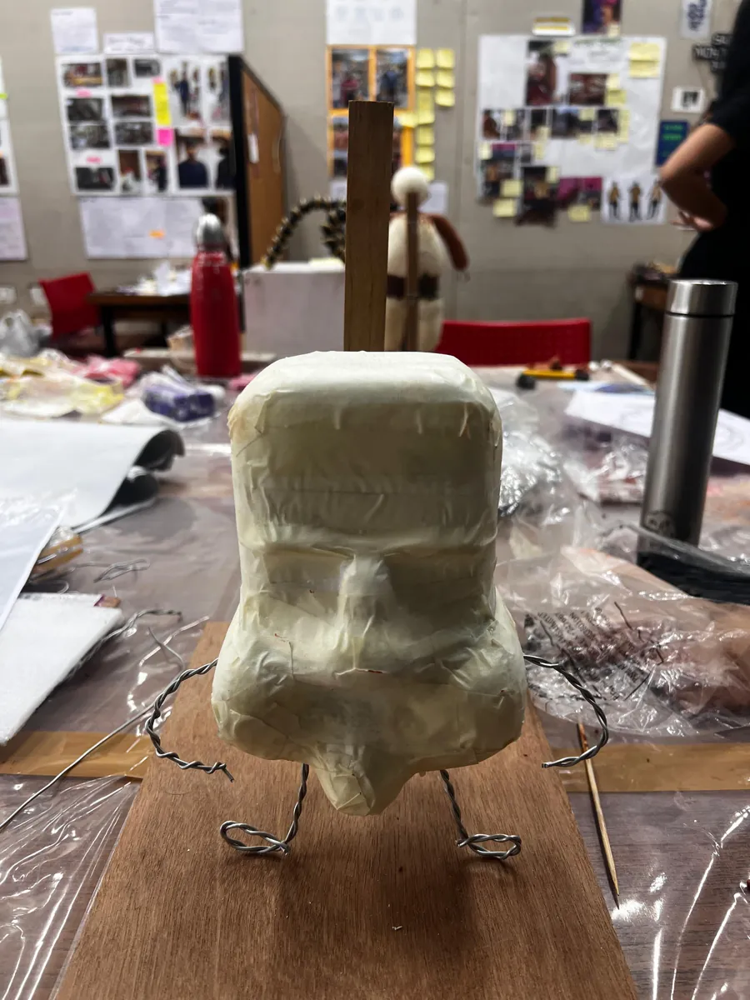
02Foam core with wire arms and legs
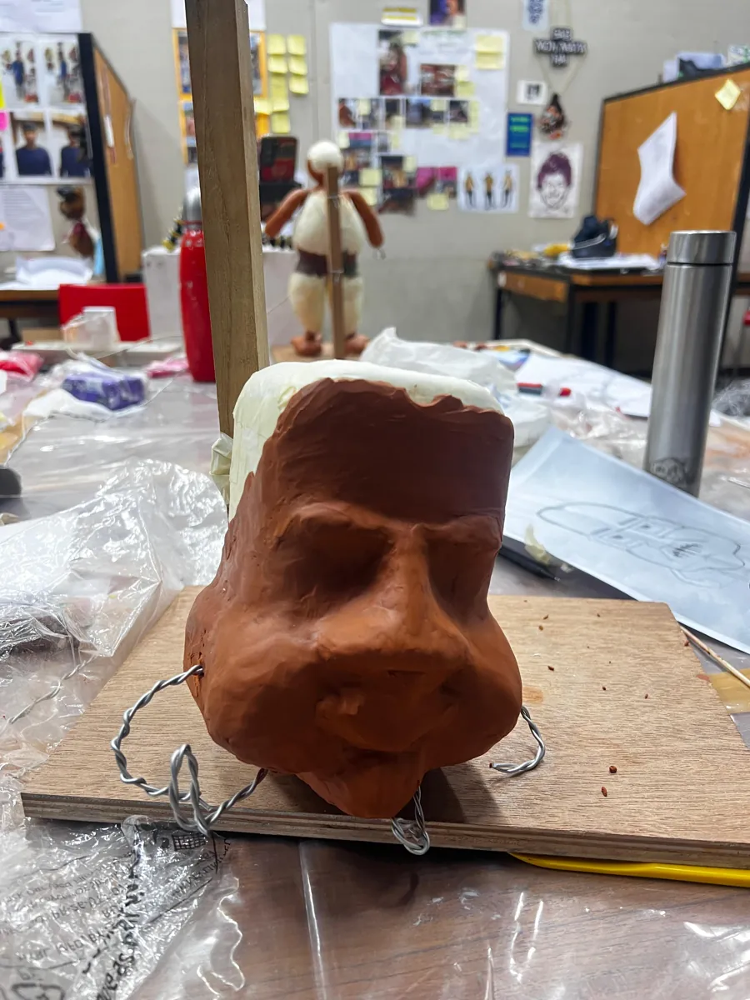
03First layer of clay, the face takes shape
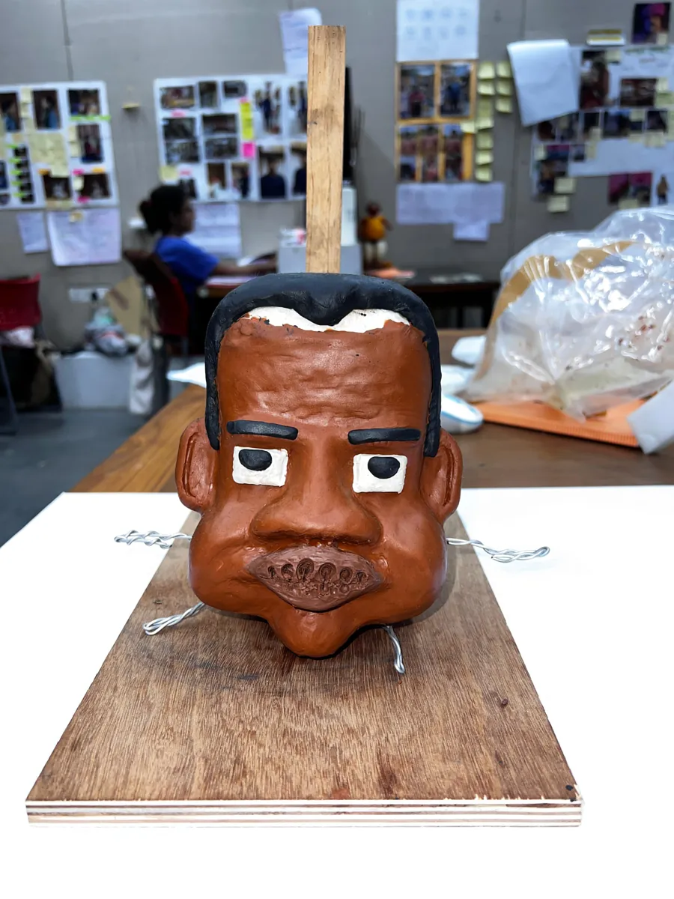
04Painted, with the padlock shackle on top
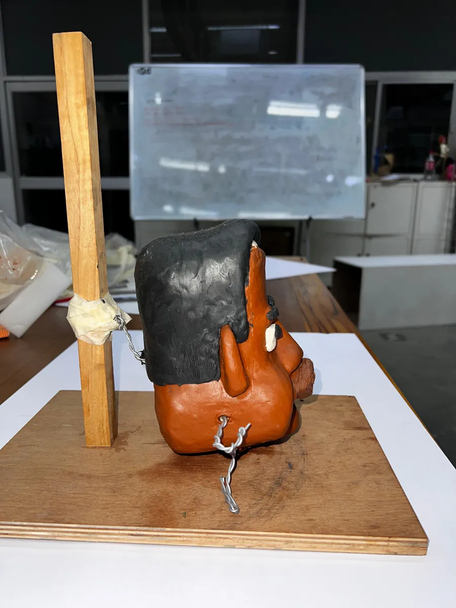
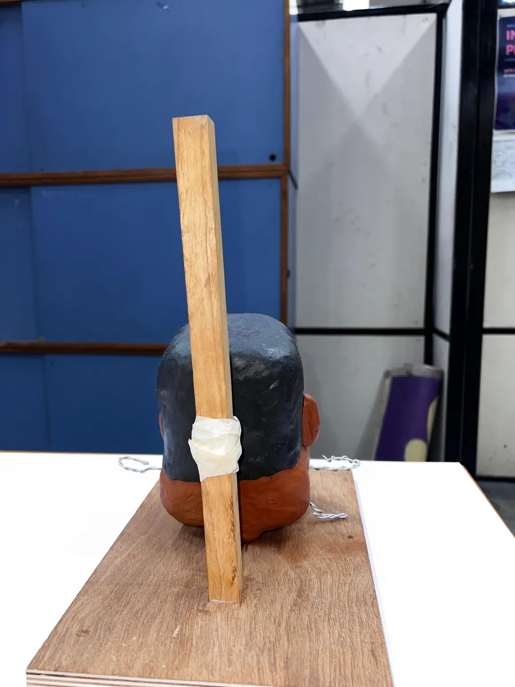
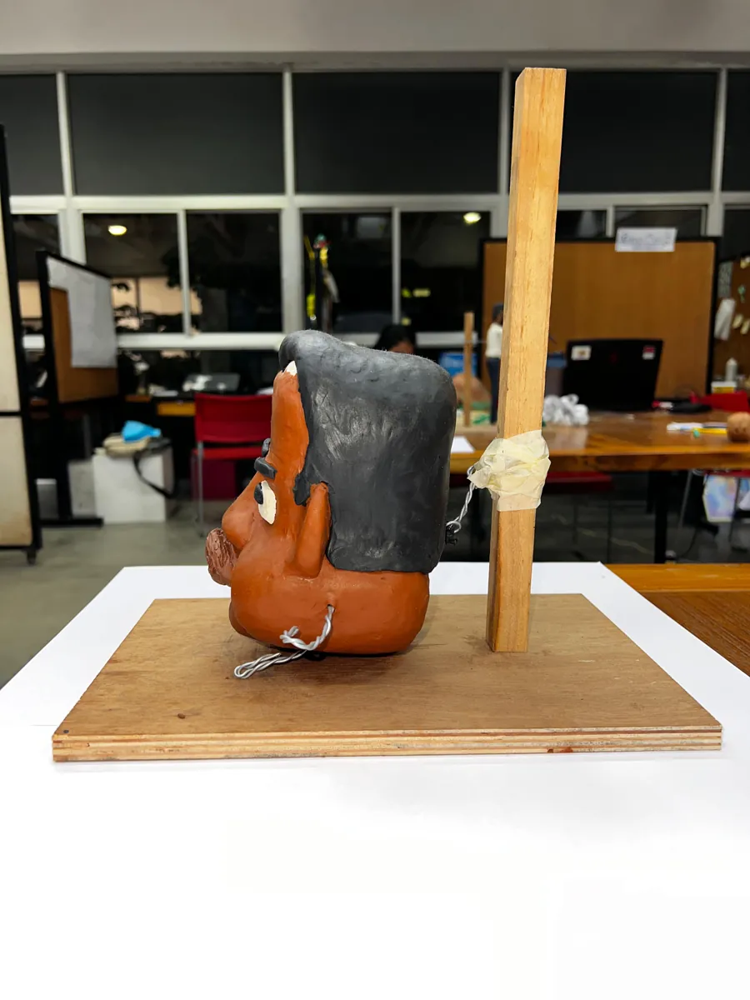
all the way round
The prison is him.
For the Technology III VR exhibition, I could have simply put the model on display. But the way our conversation unfolded, and how game-like Guddu bhai already felt, made me turn it into something you play.
He kept to himself, closed like a lock.
You start locked in a prison cell, one he built.
He opened up a little with every conversation.
He asks you for materials one at a time, and the key takes shape as you bring them.
In the end, he told me his whole story.
The finished key opens the door to a room about his life.
earning the key = earning his trust
Craft the key. Unlock the gate. Escape.
Prison Break is a first-person VR escape room. Trapped in a jail cell, you interact with objects and follow Guddu bhai's instructions to find clues and craft a key to escape. It's designed around ingenuity, observation and finishing tasks.
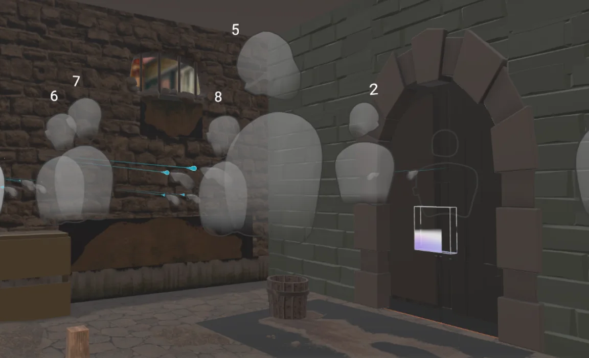
Listen
Guddu bhai gives hints, backstory and guidance.
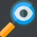
Observe
Find the key items scattered across the prison cell.
Complete mini tasks
Combine items, solve riddles or unlock mechanisms.
Follow checkpoints
Each completed task leads to the next clue or area.
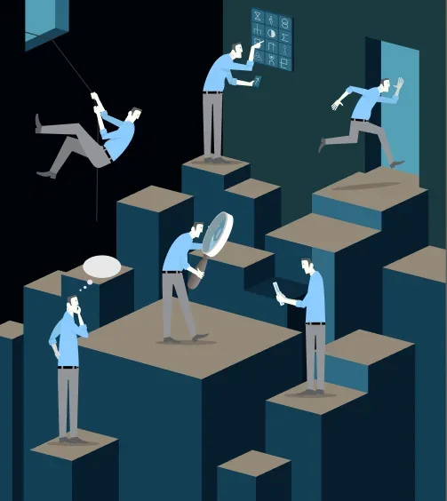
- 01Escape room"Break free by cracking clues under pressure."
- 02Task-based puzzle solving"Complete logical challenges to unlock the next step."
- 03Narrative adventure"Unfold a story as you interact and explore."
- 04Treasure hunt"Follow hidden clues to uncover the final prize."
Building the cell.
I 3D-scanned the clay model with my phone and turned it into a model I could bring into ShapesXR. The whole game is a working ShapesXR prototype, played on a Meta Quest 3.
- 01Grungy, medieval prison cell
- 02Low lighting
- 03Detailed props with cues
- 04Immersive and confining
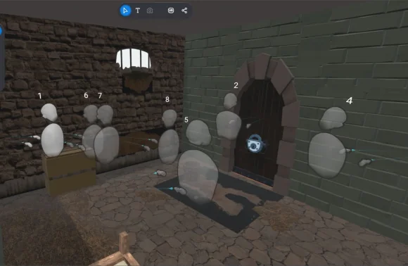
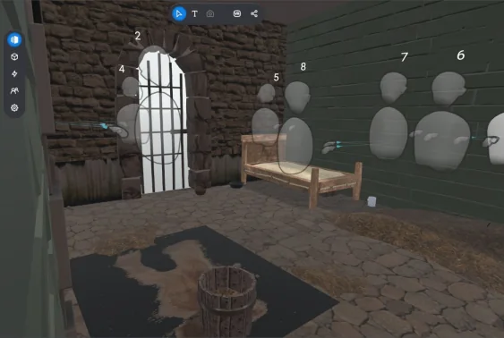
People tried it, and liked the idea.
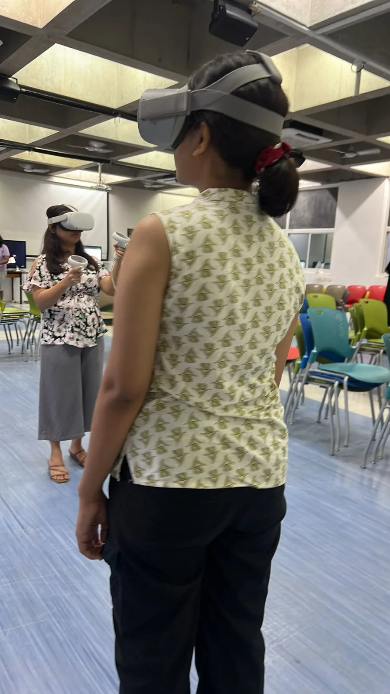
"Awesome concept, loved the audio cues!"
— Bhavna
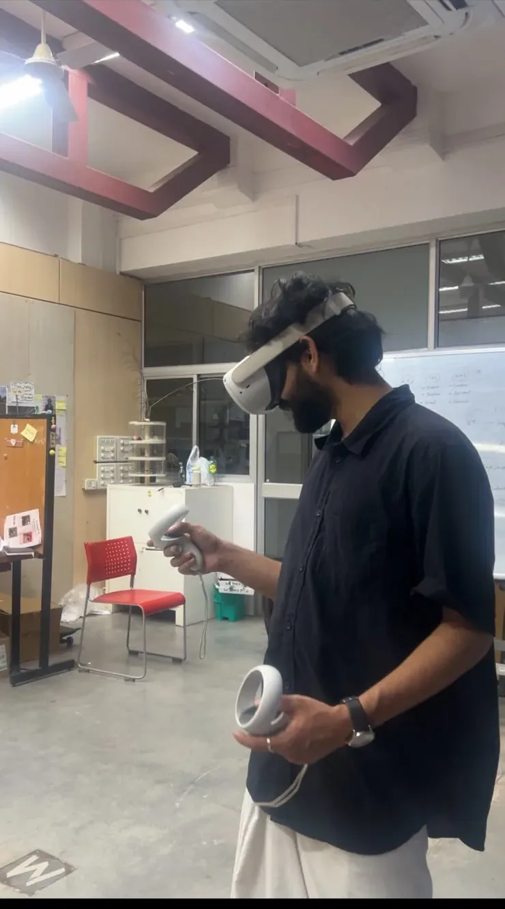
"It's fun to search for clues. Loved it!"
— Hrishi
Exhibited in VR.
Submitted as the module's VR exhibition. The people who played it liked the concept of escaping by earning a stranger's trust.